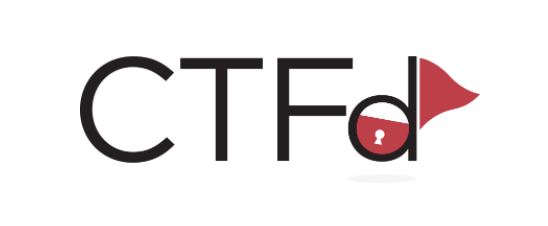

Creating a custom CTFd theme based on the core-beta one was not really straightforward, so while walking my way to achieving that, I’ve notes down the steps I figured out in case they might ever turn out useful for you ^.^
Plus, a pull request was submitted to the official CTFd core-beta repository (and accepted), and these steps are now included directly in the official documentation.
Steps
-
Clone core-beta theme locally to a seperate folder
git clone https://github.com/CTFd/core-beta.git custom-themeTo clarify the structure of the project, the
./assetsfolder contains the uncompiled source files (the ones you can modify), while the./staticdirectory contains the compiled ones. -
Install Yarn following the official installation guides.
- Yarn is a dependency management tool used to install and manage project packages
- Vite handles the frontend tooling in CTFd by building optimized assets that are served through Flask.
-
Run
yarn installin the root ofcustom-themefolder to install the necessary Node packages includingvite. -
Run the appropriate yarn build mode:
- Run
yarn dev(this will runvite build --watch) while developing the theme. - Run
yarn build(which will runvite build) for a one-time build. Vite allows you to preview changes instantly with hot reloading.
- Run
-
Now, you can start your modifications in the
assetsfolder. Each time you save, Vite will automatically recompile everything (assuming you are usingyarn dev), and you can directly see the result by importing your compiled theme into a CTFd instance. Note: You do not need thenode_modulesfolder, you can simply zip the theme directory without it. -
When you are ready you can use
yarn buildto build the production copy of your theme.
